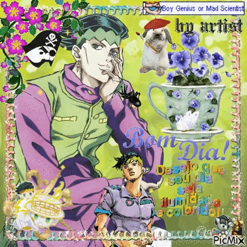
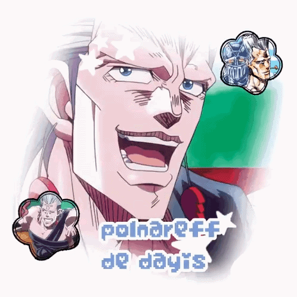
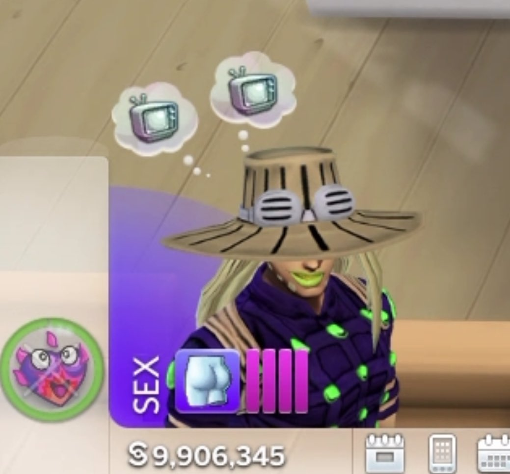
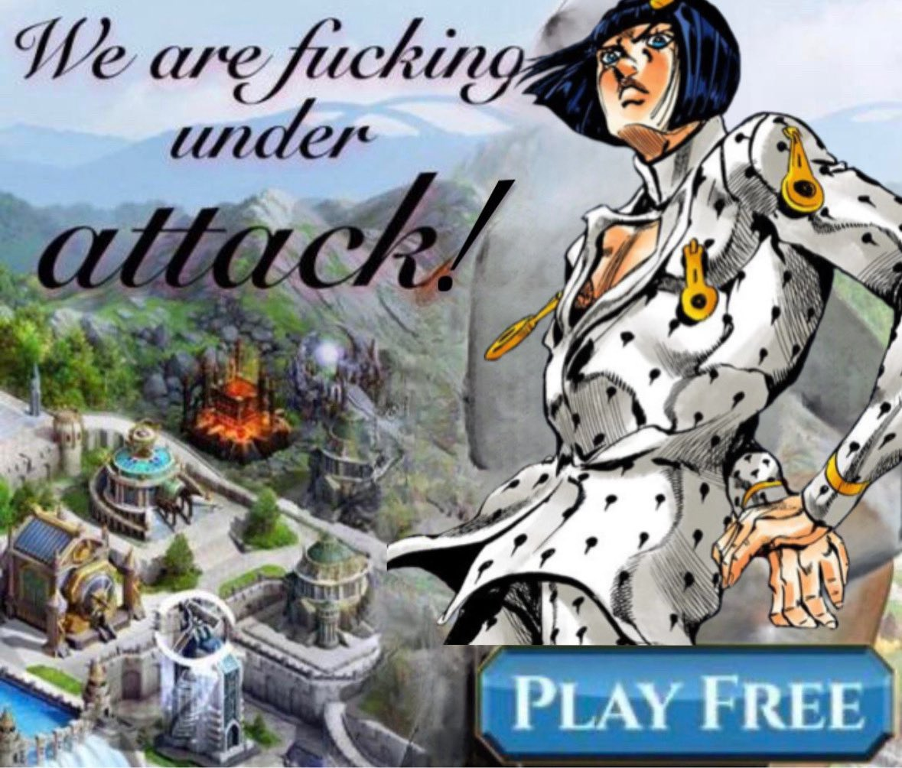
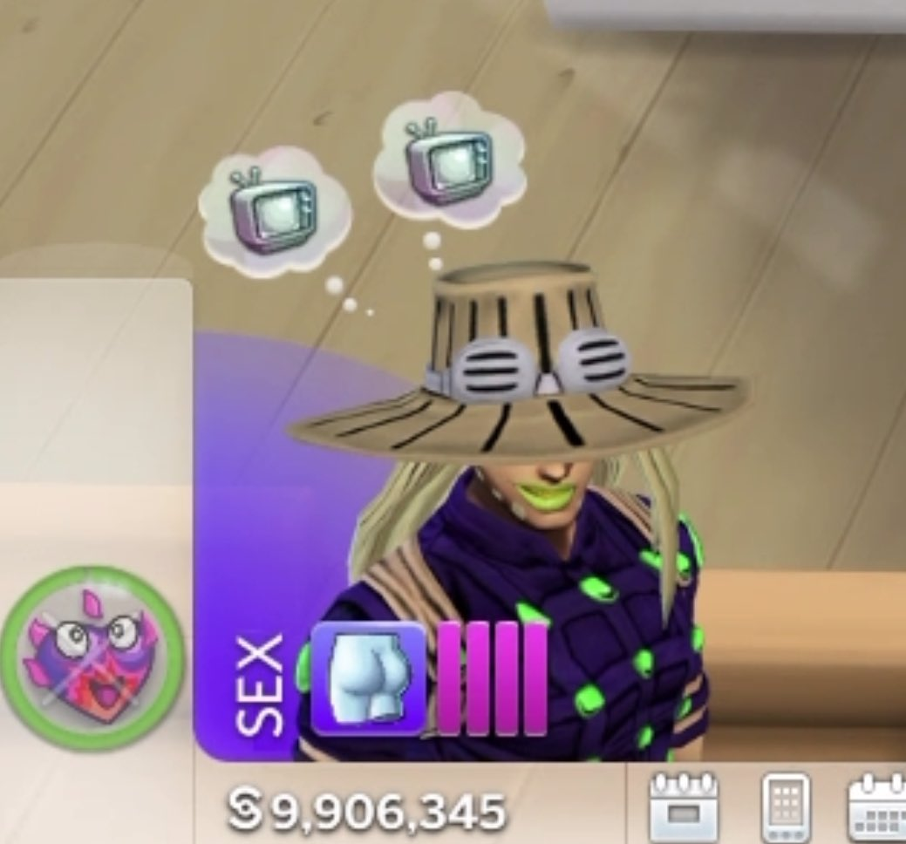
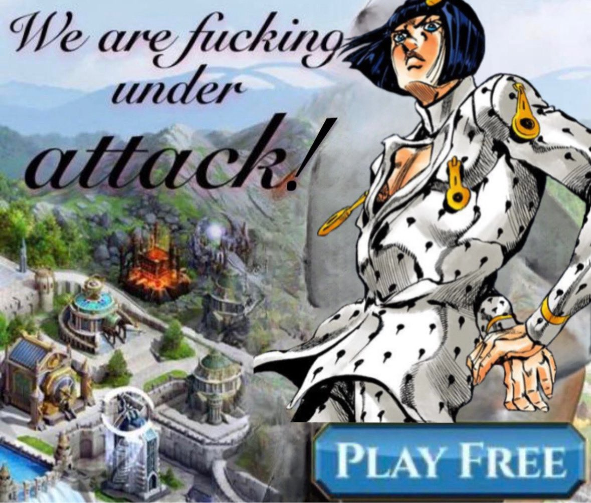

Why I love Jojos
Jojos is about Jonathan Joestar (Jojo) and his rivalry with his adopted brother Dio Brando who not only wants to ruin Jonathan’s life but all the future generations of Joestars. All the seasons are about a different Joestar and a new weird or bizarre? adventure.
My favorite seasons of the anime are Diamond is Unbreakable and Vento Aureo, and my favorite Jojos are Josuke (part 4) and Jolyne (part 6). I suggest watch all the parts because all of them are fun!;) Especially if you have a big interest in Jotaro’s part, the first season of the anime is really fun and a good introduction to what is going to happen. It is full of funny, weird moments and some iconic memes.
The first time I watched this anime was in 2021, between the BIG virus we all know about and a relative who was seriously ill for other reasons. I was really sad, with an existencial crisis and no much energy to do something. In some way to avoid the reality I start watching some visual media that was in my watchlist for a very long time. I decide to watch Jojos first and I loved the colorful ambience, weird scenarios/plot, pop culture - camp reference and some characters that are very special for me.
Right now, I’ve been reading Steel Ball Run and it's been so much fun. Gyro and Johnny are amazing characters, they make me be interest about a fucking horse race lol. I still feel like shit about Jolyne, Jotaro, Emporio and all the Pucchi shit but… Cowboy era !!! Yee-haw 🏇🏻🏇🏻🏇🏻 and yeah, I’ve been reading this for the anime announcement… But I decide to read all the parts that are not animated yet!
- Jolyne’s being jealous of snails (she's so funny lmao).
- Whatever the fuck is happening here.
- Josuke punching Rohan in the face (he deserved it).
- The fucking pistol behind the piece of paper
- Joseph takes a fucking machine gun out of his pocket.
- When Narancia saw Giorno give Mista a big gogogo.
6 Jojos funny moments that I think about minimun 5 times in a week:

Favorite characters:
Thank you for reading me yapping about Jojos, is one of my favorite animes:)!!!
Honestly, all of this is just a excuse to put this random gifs and images there.
  


